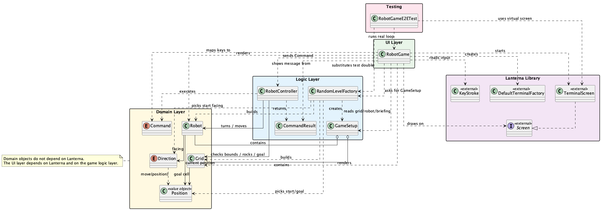
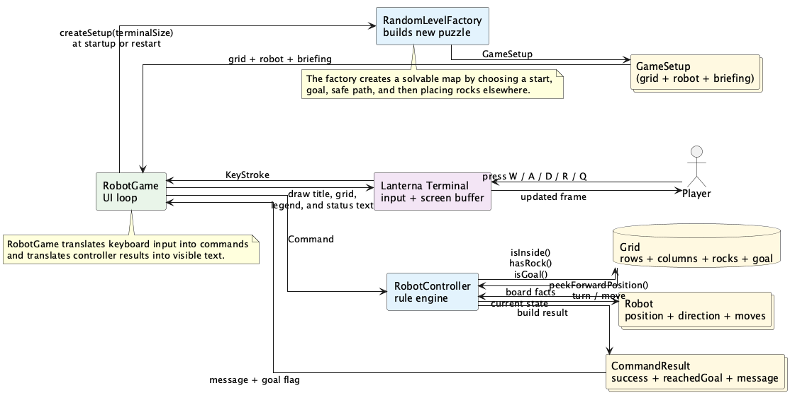
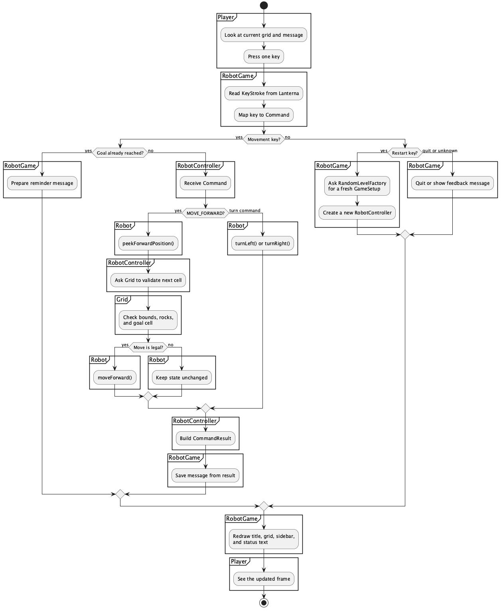

This project is a software-only robot that lives in your terminal: no hardware, no sensors—just a virtual robot on a grid. You control it with the keyboard: turn left or right, then move forward one step at a time. The idea is deliberately simple (robot-on-a-grid) so we can focus on clear class design, separation of concerns, and how input and game rules work together.
The robot has a position, a direction, and a set of keyboard controls. Each time the game starts, it builds a fresh random map with a guaranteed safe route to the goal, so you get a new puzzle every run.
This README is written as a teaching guide for students. It is deliberately a bit verbose: the goal is to walk you through the design and the code, not just list facts. In the following sections you will find:
To make the console feel like a real interactive
game instead of a stream of println output, we use an
external library—similar to how C programs use ncurses
to build terminal UIs. In this project we use Lanterna,
a Java library that turns the terminal into a controllable display and
keyboard-driven application. That way we can focus on OOP design and
game logic while the library handles the low-level details of talking to
the console.
Lanterna gives us:
KeyStroke with type ARROW_UP or
CHARACTER 'w') instead of raw bytes, so our code can map
keys to commands cleanly.Later sections (including “How The Vendored Lanterna Source Works”) go into more detail. The main idea here is: we use Lanterna so the console becomes a proper interactive playground for our toy robot, and so students can see how a real UI library fits into an OOP design.
This project is designed around a very important OOP idea:
Instead of putting everything in one giant main method,
we give each concern its own class:
Robot — Stores the robot’s own state
only: position, facing direction, and how many moves it has made. It
does not know about the grid, rocks, or the keyboard; it just
answers “where would I be if I moved forward?” and “turn
left/right.”Grid — Stores the board: number of
rows and columns, which cells have rocks, and where the goal (charging
station) is. It answers questions like “Is this position inside the
grid?” and “Is there a rock here?” but does not know about the
robot.RobotController — The rule engine. It
owns the grid and the robot and decides whether a move is allowed
(e.g. cannot step off the board or onto a rock). The UI sends commands
here; the controller executes them and returns a result message. Game
rules live in this class, not in the UI.RandomLevelFactory — Builds a new
puzzle on demand: grid size, start and goal positions, a safe path
between them, and rocks everywhere else. Returns a
GameSetup (grid + robot + briefing) so each run or “press
R” gives a fresh, solvable level.RobotGame — The user-interface layer.
It talks to Lanterna: reads key presses, draws the screen (grid,
sidebar, messages), and turns keys into commands that it sends to the
controller. It does not decide if a move is legal; it only
displays what the controller reports.That separation makes the code easier to read (each file has one job), test (e.g. you can test the controller without a screen), and extend (e.g. add a new command without touching the grid or the drawing code).
This project reinforces several core programming ideas; each one appears in a concrete way in the code:
Robot, Grid, Position,
etc.). You create instances, call methods on them, and pass them around
instead of juggling loose variables.row and
column — We use a 2D grid with zero-based row and
column indices. The Position class wraps one cell;
Direction describes how row/column change when the robot
moves (e.g. North = row − 1).Direction (NORTH, EAST, SOUTH,
WEST) and Command (MOVE_FORWARD, TURN_LEFT, TURN_RIGHT) are
enums: a fixed set of named values so the code is readable and the
compiler can help catch typos.peekForwardPosition() only computes the next cell; the
controller decides whether the robot is allowed to move there. Keeping
methods focused makes the design easier to follow and test.From the project root:
| Goal | Command |
|---|---|
| Compile | ./compile.me |
| Run the game | ./run.me |
| Generate Javadocs | ./doc.me |
| Run tests | ./runme |
Compile once (or after changing code); then use ./run.me
to play, ./doc.me to generate HTML Javadocs, or
./runme to run the test suite. See How to Run
It and Automated Testing below for more
detail.
This diagram gives you the structural view of the project. It answers questions such as:
When you read this diagram, start with
RobotGame at the UI layer. It depends on
many other classes because it is the top-level coordinator: it starts
Lanterna, asks RandomLevelFactory for a
GameSetup, creates a RobotController, reads
keys, and draws the current state. From there, follow the arrows
downward into the logic and domain layers to see how the UI relies on
lower-level objects instead of putting all logic in one place.
The domain layer is intentionally simpler. Robot stores
the robot’s own state, Grid stores the board state,
Position represents one cell, and enums such as
Direction and Command keep the valid values
clear and limited. A very important teaching point is that these classes
do not depend on Lanterna. In other words, the game
world and rules can exist even without the terminal UI.
The logic layer sits in the middle. RobotController
applies the rules of movement, RandomLevelFactory creates a
fresh solvable puzzle, GameSetup groups together the
starting pieces for one game, and CommandResult carries the
outcome of one action back to the UI. This middle layer is what lets the
project stay clean: the UI asks for work to be done, and the logic layer
decides what actually happens.
So the big lesson from this diagram is dependency direction: the UI depends on the game logic and domain objects, but the core game objects do not depend on the UI. That one idea is a major part of good OOP design because it makes the code easier to test, reason about, and extend.

This diagram gives you the runtime view of the project. Instead of focusing on “which class knows which class,” it focuses on what information moves through the system while the game is running.
The flow begins with the player and the
terminal. A key press such as W,
A, D, R, or Q is
captured by Lanterna and turned into structured input for
RobotGame. The UI does not directly change the robot at
that point. Instead, it translates the input into a command or
restart/quit action and sends the important part of that input to the
correct object.
From there, two major data paths exist. At startup or restart,
RobotGame asks RandomLevelFactory to create a
new GameSetup, which contains a fresh Grid,
Robot, and briefing message. During normal play,
RobotGame sends a Command to
RobotController, which checks the Grid,
inspects or updates the Robot, and builds a
CommandResult.
That CommandResult is important because it carries
information back to the UI: whether the move succeeded,
whether the goal was reached, and what text message should be shown.
Then RobotGame redraws the title, grid, legend, and sidebar
based on the latest robot and grid state, and Lanterna shows the updated
frame to the player.
This diagram is useful because it helps students separate
objects that store state from processes that
move information around. Robot and
Grid are not just boxes on a screen; they are the main
sources of state. RobotGame,
RandomLevelFactory, and RobotController act
more like processors that read state, transform it, and send the results
onward.

This swimlane diagram zooms in further and shows a single turn in detail. It is the best diagram for understanding the question: “What exactly happens after the player presses one key?”
Each vertical lane represents one participant with one main responsibility: the Player acts, RobotGame reads and interprets input, RobotController applies the rules, Robot changes its own internal state when told to do so, and Grid answers board-related questions such as whether a move is inside the map or blocked by a rock.
Read the diagram from top to bottom. The player presses a key,
RobotGame reads the key and maps it to a command, and then
the flow branches depending on what kind of key it was. If it is a
movement or turning command, the controller handles it. If it is a
restart key, the UI asks for a fresh setup. If it is quit or unknown
input, the UI handles that case differently. That branching is important
because real programs rarely have only one straight-line path.
For a forward move, the diagram shows an especially important OOP
pattern: RobotGame does not move the robot
directly. Instead, RobotController asks the
Robot for the next position, asks the Grid
whether that move is legal, and only then tells the Robot
to move. This keeps the rules in the controller and keeps the robot
focused on its own state.
After the rule check, the controller creates a
CommandResult, the UI stores the message, and the screen is
drawn again. So the full story of one turn is not only “input causes
motion”; it is really input → interpretation → rule checking →
state update → result message → redraw. That is the main
sequence students should notice in this diagram.

The player controls a robot called Robo: a software-only character that lives in the terminal. There is no physical robot, no motors or sensors—just a virtual toy that moves on a grid when you press keys. That simplicity is deliberate so we can focus on how the program is structured.
R generates a completely new puzzle.Even though the game is simple, it teaches you a lot of important programming ideas:
RobotGame; the controller
(RobotController) decides what happens when the player
acts. The UI does not decide if a move is legal; it only displays the
result. That separation keeps the code easier to test and change. You
will see these ideas again in more advanced second-year courses
(e.g. GUI frameworks and software design and architecture).There are three layers in this project.
These classes describe the game world itself.
PositionDirectionCommandCommandResultRobotGridThese classes decide how a game is created and how commands affect it.
RobotControllerRandomLevelFactoryGameSetupThis class talks to Lanterna and draws the game in the terminal.
RobotGamesrc/Position.javaPosition stores one location on the board.
row tells us which horizontal line the cell is oncolumn tells us which vertical slot the cell is intranslate(...) creates a new position relative to the
old onesameCell(...) checks whether two positions refer to the
same grid cellThis class is intentionally very small—and that is good design. A
class that does one thing (here: represent a cell on the grid) is easier
to understand, easier to test, and less likely to break when you change
other parts of the program. Position is a good example
of a POJO (Plain Old Java Object): no framework magic,
no inheritance from a library base class—just fields (row,
column), a constructor, getters, and a few simple methods.
POJOs are easy to reason about and reuse; many real-world projects rely
on small, focused classes like this.
Later, in enterprise-grade projects (e.g. Java EE or Spring), you will meet heavier building blocks such as EJBs (Enterprise Java Beans) or framework-managed beans—classes that depend on containers, annotations, and configuration. The idea is similar: each component has a clear role. POJOs and value objects like Position remain the foundation; the more complex pieces often wrap or use them. Getting comfortable with small, clear classes now will make those later concepts easier to follow.
src/Direction.javaJava enums are a way to define a fixed set
of named constants as a type. Instead of using magic numbers or
strings (e.g. 1 for North, "EAST" for East),
you declare the allowed values once, and the compiler ensures that only
those values can be used. Enums are used whenever you have a small,
closed set of options: compass directions, days of the week, order
status (PENDING, SHIPPED, DELIVERED), or—as in this project—the four
directions the robot can face and the three commands it can execute.
They make code readable (Direction.NORTH instead of
-1), and they prevent invalid values (you cannot
accidentally pass a fifth direction). In this project,
Direction and Command are both
enums.
Direction is an enum with four values:
NORTHEASTSOUTHWESTEach direction stores how movement changes the coordinate.
Examples:
-1+1It also contains:
turnLeft()turnRight()move(Position position)This is a nice example of putting behavior inside the enum instead of scattering turning logic all over the project.
src/Command.javaCommand represents the actions our robot
understands.
MOVE_FORWARDTURN_LEFTTURN_RIGHTWe use an enum because the set of valid commands is fixed and small.
src/CommandResult.javaWhen the player presses a key, we do not just want “yes” or “no”.
We want to know:
That is why CommandResult exists.
src/Robot.javaRobot stores the robot’s own state:
Important design choice:
Robot does not know about rocks or screen drawingThat is the controller’s job, not the robot’s job.
src/Grid.javaGrid stores the board:
Rocks are stored in a boolean[][] array.
That means:
true means there is a rock in that cellfalse means there is no rock in that cellImportant methods:
isInside(...)hasRock(...)isGoal(...)addRock(...)src/RobotController.javaRobotController is one of the most important classes in
the whole project.
This class is the rule engine.
Its job is to answer questions like:
This is a good OOP habit:
src/GameSetup.javaGameSetup is a small container class that groups
together:
This makes it easier for RandomLevelFactory to return
one object instead of several separate pieces.
src/RandomLevelFactory.javaThis class creates a brand-new puzzle.
Its job is to:
This class is a strong example of abstraction:
GameSetupsrc/RobotGame.javaRobotGame is the Lanterna UI class.
It is responsible for:
Here is an overview of what we are doing here:
1. The job of the UI layer.
RobotGame is the only class that talks directly to the
terminal. Its job is to present the game and forward
user input. It does not decide whether a move is legal, where rocks are,
or how the level is built. Those decisions live in
RobotController, Grid, and
RandomLevelFactory. By keeping all terminal and drawing
code in one place, we make the rest of the program independent of
Lanterna and easy to test without a real screen.
2. Starting up.
In main, we create a Lanterna terminal and screen: a
DefaultTerminalFactory, an initial size, and a
TerminalScreen. We then hand that screen to
runGameLoop. That way, the game runs in a buffered text
display instead of a raw console, so we can redraw the whole frame
(grid, sidebar, messages) in one go instead of appending lines.
3. The game loop.
Inside runGameLoop, we create the first level (via
RandomLevelFactory), a RobotController, and a
message string. Then we loop: sync the screen size in case the user
resized the window, draw the current frame, read one key, and react. The
loop runs until the user quits (e.g. Q or EOF). Restart (R) is handled
by creating a new GameSetup and a new controller, so the
next iteration draws and reacts using the new state.
4. From keys to commands.
When a key is read, we map it to a Command (move forward,
turn left, turn right) or to a special action (quit, restart). Unknown
keys produce a “that key does not control Robo” message. We do not
interpret keys as game rules; we only turn them into commands and pass
them to the controller. The controller returns a
CommandResult (success/failure, goal reached or not,
message), and we display that message and, if the goal was reached,
append a short “Mission complete” line.
5. Drawing one frame.
Each frame we clear the screen, then draw the title, instructions, grid
(with row/column labels and one symbol per cell: robot, goal, rock, or
empty), and the sidebar (robot name, position, direction, goal, move
count, legend, and the current message). We choose colors and symbols so
the robot, goal, and rocks are easy to see. If the terminal is too small
to show the full grid, we draw a “terminal too small” message instead of
crashing. Layout (sidebar beside or below the grid) is chosen from the
current terminal size so the game adapts to the window.
6. Safety and layout.
We avoid drawing outside the terminal by clipping text to the visible
area (safePutString). We also handle resize: at the start
of each loop we call syncScreenSize so our layout and
drawing use the latest dimensions. Long messages in the sidebar are
wrapped to a few lines so the panel stays readable. All of this is
orchestration: the UI has to coordinate size, layout, and many small
drawing steps, which is why this class has more methods and branches
than the domain or controller classes.
7. Why this class is larger.
UI code often needs more orchestration than domain or logic code. One
class is responsible for startup, the loop, key mapping, drawing the
grid, drawing the sidebar, choosing layout, handling “too small” and
resize, and safe string placement. Each of those is a clear sub-task,
but there are many of them, so the file is longer. The important point
is that RobotGame still has one overall responsibility:
the interface between the player and the rest of the game. It
does not contain game rules or data structures for the board; it only
displays and forwards input.
RobotGame depends on RobotController,
Grid, Robot, and the supporting types
(Position, Direction, Command,
CommandResult, GameSetup,
RandomLevelFactory). It gets the current state from the
controller and the level factory, draws that state, and sends commands
back to the controller. So the flow is: input → RobotGame (map key
to command) → RobotController (apply rules, update robot/grid) →
RobotGame (draw updated state). That separation of concerns is what
allows us to test the controller without a terminal and to change the UI
(e.g. different keys or layout) without touching the game rules.
Compile:
./compile.meRun:
./run.meGenerate the Javadocs:
./doc.meThis writes the generated HTML documentation to
docs/javadoc/index.html.
Run the automated tests:
./runmeThis project builds against the local Lanterna source checkout
in vendor/lanterna, so compile.me installs
that source build before compiling the game.
The vendor/lanterna folder is a full local copy of the
Lanterna library source code. That means the project does not treat
Lanterna as a hidden black box downloaded from the internet every time.
Instead, students can open the library files, read the code, and see how
a real Java terminal UI library is organized internally.
Our own game code lives in src, while the library code
lives in vendor/lanterna. That separation is important
because it teaches a common software-engineering idea: your application
code uses other people’s libraries, but those libraries are usually
large projects with their own design, packages, tests, and build files.
Seeing both side by side helps students understand where their code ends
and where a dependency begins.
The word “vendor” here means “we copied in the dependency source on purpose.” Teams sometimes vendor a library when they want stable builds, local debugging, or the ability to inspect the exact version they are using. In a teaching project, vendoring is especially useful because students can trace a method call from their own game directly into the library that powers it.
Lanterna itself is not our game. Lanterna is a reusable toolkit for making terminal applications in Java, and our robot game is one example program built on top of that toolkit. Students should think of Lanterna the same way they think of a graphics engine or a collections library: it provides tools and abstractions, while our classes decide the game rules and story.
The build process shows how the vendored source becomes available to
our project. When compile.me runs, it first executes Maven
inside vendor/lanterna and installs Lanterna into the local
Maven repository on the computer. After that, our main
pom.xml can depend on that locally built artifact just like
it would depend on a library from Maven Central.
This local-install step is the bridge between the two projects. The
Lanterna source tree has its own pom.xml, source folders,
and package structure, so Maven treats it as a standalone Java library.
Once Maven installs it locally, our robot project can say “I depend on
com.googlecode.lanterna:lanterna:3.2.0-SNAPSHOT” and the
compiler knows where to find those classes.
One big-picture idea inside Lanterna is that it separates low-level terminal access from higher-level screen drawing. A raw terminal can print characters, move the cursor, change colors, and read key presses, but doing that directly is awkward. Lanterna wraps those details in objects so applications like our game can think in terms of screens, text graphics, and key strokes instead of raw escape sequences.
The terminal package in Lanterna is the lower layer. It
deals with the concept of a terminal window itself: size, cursor
position, text output, input events, and resize notifications. When
students see DefaultTerminalFactory in our game, they are
using this lower layer indirectly to create the real terminal
connection.
The screen package sits on top of the terminal package
and gives us a buffered drawing model. Instead of printing every
character directly to the terminal one by one, we draw into a screen
buffer and then call refresh(). This is why our UI feels
more like a game screen than a stream of println(...)
calls, and it also explains why TerminalScreen is one of
the most important Lanterna classes for our project.
The graphics package is what makes drawing comfortable.
It gives us helper objects such as TextGraphics, which let
us place strings at coordinates, set colors, and use styles like bold
text. In our code, methods such as drawGrid(...) and
drawSidebar(...) rely on these graphics helpers so the
drawing code reads like “draw this text here” rather than a long series
of low-level terminal instructions.
The input package gives Lanterna a clean language for
keyboard events. Instead of our game parsing raw bytes from the
terminal, Lanterna converts them into objects like
KeyStroke and labels them with types such as
CHARACTER, ARROW_UP, or EOF. That
is why our RobotGame code can simply switch on the key type
and map it to MOVE_FORWARD, TURN_LEFT, or
TURN_RIGHT.
The virtual terminal support inside Lanterna is
especially valuable for teaching and testing. A virtual terminal behaves
like a terminal in memory, without needing a student to sit there and
press real keys. That lets our tests start a real
TerminalScreen, push in fake key presses, and verify that
the game loop responds correctly, which is a powerful example of testing
an interactive program end to end.
Lanterna also contains higher-level GUI support in packages such as
gui2, even though our robot project does not use that
layer. This is a nice lesson in library design: a mature library often
supports multiple levels of abstraction so different programs can choose
the amount of power or simplicity they need. Our game stays with the
screen-and-graphics layer because it is easier for beginners to
understand.
Another useful thing students can notice is that the Lanterna source tree looks like a real professional library project. It has many packages, documentation files, tests, and examples because it is designed to be reused by many different applications. That helps students see that libraries are not magic; they are simply other Java projects with good organization and a broader purpose.
In our specific game, the first Lanterna object we touch is
DefaultTerminalFactory. Its job is to create a terminal
implementation that matches the current environment, which might be a
normal terminal window or something else supported by Lanterna. We then
wrap that terminal in TerminalScreen, because our game
wants the higher-level buffered drawing features from the screen
layer.
Once the screen exists, our code uses Lanterna in a repeating cycle: clear the screen, draw text, refresh the screen, read one key, update the game state, and loop. That cycle is the practical connection between the library and our OOP design. Lanterna handles the “how do I talk to the terminal?” problem, while our own classes handle the “what does this key mean for the robot?” problem.
The resize behavior is another place where the library structure
matters. Lanterna tracks terminal size changes and exposes them through
methods such as doResizeIfNecessary(), so our game can
redraw safely after the window changes. Because the library already
solves the detection and buffering problem, our code can focus on layout
decisions such as whether the sidebar should appear beside the grid or
below it.
Keeping the Lanterna source locally also makes debugging much richer. If the game crashes inside a library call, students can step into that method in the IDE and inspect what the library is doing. This turns debugging into a learning opportunity, because students can observe how a third-party API turns their high-level method calls into internal state changes.
There is also an important software-design lesson in not editing the
vendored code casually. Our game should normally adapt by changing
classes in src, not by rewriting library internals every
time we want new behavior. The vendored source is there mainly so we can
understand, debug, and occasionally patch with care, while keeping a
clear boundary between application logic and dependency logic.
The big picture is that vendor/lanterna is the engine
room that makes the interactive terminal experience possible, while our
own classes are the game rules and teaching examples built on top of it.
Students do not need to memorize the whole library, but they should
understand the layers: terminal access at the bottom, buffered screens
and drawing in the middle, and our robot game at the top. Once they see
that stack clearly, the whole project becomes much easier to reason
about.
This project uses JUnit 5 for automated testing. JUnit gives us a standard way to write test methods, make assertions, and run the full suite from Maven or a small helper script.
The most important test file is
src/test/java/RobotGameE2ETest.java. Those tests start a
Lanterna DefaultVirtualTerminal, wrap it in a real
TerminalScreen, feed in keyboard input, and let
RobotGame run its actual loop. That means the tests cover
the same path a real player uses: key press, input mapping, controller
logic, robot movement, and screen updates.
The test code is heavily commented so students can learn from it. It
shows how to build predictable GameSetup objects for
testing, how to create a small test double for
RandomLevelFactory, and how to run a blocking game loop on
a background thread while the test script pushes key events into the
virtual terminal.
We currently test three end-to-end behaviors. One test proves that
movement keys really change robot state, another proves that
R replaces the current setup with a new one, and a third
proves that many rapid restarts do not crash the game loop.
You can run the tests with either mvn test or
./runme. The runme script first installs the
vendored Lanterna source and then runs the JUnit suite, so students only
need a single command when they want to check whether the project still
works.
W or Up Arrow: move forwardA or Left Arrow: turn leftD or Right Arrow: turn rightR: load a fresh random mapQ: quitHere is the full flow from program start to gameplay.
main creates the Lanterna screenIn RobotGame.main(...) we:
DefaultTerminalFactoryTerminalScreenrunGameLoop(...)Lanterna’s Screen acts like a buffered canvas for
text.
runGameLoop(...) creates the first gameInside runGameLoop(...) we create:
RandomLevelFactoryGameSetupRobotControllerNow the game has everything it needs to begin.
Each loop does this:
Examples:
W or Up Arrow becomes MOVE_FORWARDA or Left Arrow becomes TURN_LEFTD or Right Arrow becomes TURN_RIGHTThis happens in:
mapKeyToCommand(...)mapCharacterKey(...)RobotGame calls:
controller.execute(command);Then RobotController decides what happens.
If the player tries to move:
CommandResult comes backThat result includes:
The game loop runs again, so the player sees the new board state immediately.
This is one of the most interesting parts of the project.
We want each board to be random, but still playable.
That means:
RandomLevelFactory.createSetup(...) works like this:
If we placed rocks completely randomly, we might block the goal by accident.
Instead, we first mark cells that must stay open.
That safe path is built by:
This creates a simple but guaranteed route.
Lanterna does not work like System.out.println(...).
Instead:
screen.refresh()draw(...) paints a whole framedrawGrid(...) paints the boarddrawSidebar(...) paints status and instructionssafePutString(...)?Terminal windows can be resized while the game is running.
If we try to draw outside the visible screen area, some terminal libraries behave badly.
So safePutString(...):
That makes the UI safer and more robust.
screen.doResizeIfNecessary()?Lanterna keeps internal buffers for the screen.
If the terminal size changes, those buffers need to be updated.
That is why syncScreenSize(...) runs near the start of
every game loop iteration.
Each class hides its own data and exposes methods for safe use.
Examples:
Robot controls its own movementGrid controls its own rock dataWe separate:
This is one of the most valuable design lessons in the project.
The rest of the program does not need to know how random generation works.
It only needs:
GameSetup setup = factory.createSetup(terminalSize);Objects are built out of other objects.
Examples:
RobotController contains a Grid and a
RobotGameSetup contains a Grid,
Robot, and briefing stringPosition is immutable.
That means:
Position object never changesPositionThis reduces bugs and makes the logic easier to follow.
If students are opening the files one by one, this order works well:
Position.javaDirection.javaCommand.javaRobot.javaGrid.javaCommandResult.javaRobotController.javaGameSetup.javaRandomLevelFactory.javaRobotGame.javaThat order moves from the smallest ideas to the largest one.
Suppose the player presses W.
screen.readInput()RobotGame.mapKeyToCommand(...) converts it to
MOVE_FORWARDRobotGame.toCommandResult(...) sends it to
RobotControllerRobotController.moveForward() checks the next cellRobot.moveForward() updates the robotCommandResult is returnedRobotGame.draw(...) paints the updated boardThis is an example of objects collaborating: - Position
is a small class that helps students stop passing raw numbers
everywhere. - Grid and Robot have separate
jobs, which is a good early OOP habit. - RobotController is
the rule engine, while RobotGame is only responsible for
the Lanterna interface. - RandomLevelFactory shows how one
class can build objects for the rest of the program. - The drawing code
uses loops to render rows and columns on the screen.
Position immutable?Robot not check for rocks by itself?RandomLevelFactory a separate class?CommandResult instead of just
true or false?RobotController?MOVE_BACKWARD